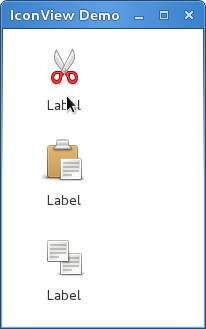

IconView¶
Gtk.IconView 是一个在网格视图中显示很多图标的控件。支持诸如拖拽、排序等特性。
与 Gtk.TreeView 类似， Gtk.IconView 使用 Gtk.location
作为其数据模型，但其并不使用 cell renderers ，而是要求
与其关联的 Gtk.ListStore 要有一列包含 GdkPixbuf.Pixbuf 对象。
Gtk.IconView 支持很多中选择模式以允许可以一次多选很多个图标，或者只能
选择一个，或者直接完全不可选择。要指定选择模式，使用
Gtk.IconView.set_selection_mode() 方法并传递
Gtk.SelectionMode 的实例来指定选择模式。
IconView 对象¶
-
class
Gtk.IconView¶ -
static
new_with_area(area)¶ 创建一个新的
Gtk.IconView控件并使用指定的 area 来布局 图标。
-
static
new_with_model(model)¶ 创建一个新的
Gtk.IconView控件并使用指定的 model 。
-
set_model(model)¶ 设置
Gtk.IconView要使用的数据模型。 如果Gtk.IconView已经设置了一个模型，将会被替换。 如果 modle 为None，则会取消原来设置的模型。
-
get_model()¶ 返回
Gtk.IconView基于的模型，如果未曾设置则返回None。
-
set_text_column(column)¶ 设置文本列为 column ，文本列的类型必须是
str。
-
get_text_column()¶ 返回文本列，如未设置则返回-1。
-
set_markup_column(column)¶ 设置
Gtk.IconView的带有标记信息的列的内容为 column 。 带有标记信息的列必须是str类型的。 如果设置了带有标记信息的列，则会覆盖set_text_column()设置的文本列。
-
get_markup_column()¶ 返回带有标记信息的列，如果未曾设置则返回-1。
-
set_pixbuf_column(column)¶ 设置图标列的图标为 column 。 图标列的类型必须是
GkdPixbuf.pixbufs
-
get_pixbuf_column()¶ 返回设置的图标列，若未曾设置则返回-1。
-
get_item_at_pos(x, y)¶ 查找在 (x, y) 点处的path，点的坐标为bin_window的相对坐标。 与
get_path_at_pos()不同，本方法也或获取指定坐标的单元格。 关于将控件的坐标转换为bin_window坐标，请参考convert_widget_to_bin_window_coords()。
-
convert_widget_to_bin_coords(x, y)¶ 将控件的坐标转换为bin_window的坐标，以供类似
get_path_at_pos()这样的方法调用。
-
set_cursor(path, cell, start_editing)¶ 设置当前的键盘焦点为 path 并选中。当你想把用户的注意力集中到某个项目时这 非常有用。如果 cell 不为
None，则会聚焦到 cell 上。 另外，如果 start_editing 为 True, 则会在指定的cell上立即开始编辑状态。本函数经常跟在
grab_focus()后不调用以获取键盘的焦点。注意编辑状态 只有在实现了这种功能的控件上可用。
-
get_cursor()¶ 返回当前的光标（cursor）路径和单元格。如果cursor未设置，path返回
None。 如果没有聚焦于单元格，cell也返回None。
-
selected_foreach(func, data)¶ 对于每一个选中的图标调用函数func，注意在调用此方法时模型和选择的项目不能修改。 Note that the model or selection cannot be modified from within this method.
-
set_selection_mode(mode)¶ 设置
Gtk.IconView的选择模式Gtk.SelectionMode。
-
get_selection_mode()¶ 返回
Gtk.IconView的选择模式 :class:`Gtk.SelectionMode。
-
set_item_orientation(orientation)¶ 设置项目的 “item-orientation” 属性，这决定了图标的标签是在图标的旁边还是下面。
-
get_item_orientation()¶ 返回决定图标的标签是在图标旁边还是在图标下面的 “item-orientation” 属性的值。
-
set_columns(columns)¶ 设置决定了图标排布列数的 “columns” 属性的值。 如果 column 的值为-1，则列数会自动选择来填充可用的区域。
-
get_columns()¶ 返回 “cloumns” 属性的值。
-
set_item_width(item_width)¶ 设置指定每一个项目所占宽度的 “item-width” 属性的值。 如果设置为-1，则会自动决定一个合适的尺寸。
-
get_item_width()¶ 返回 “item-width” 属性的值。
-
set_spacing(spacing)¶ 设置 “spacing” 属性的值，该属性指定了项目的单元格（即图标和标签）间的空白。
-
set_row_spacing(row_spacing)¶ 设置 “row-spacing” 属性的值，该属性指定了每行之间空白的大小。
-
get_row_spacing()¶ 返回 “row-spacing” 属性的值。
-
set_column_spacing(column_spacing)¶ 设置 “column-spacing” 属性的值，该属性指定了列之间的空白的大小。
-
get_column_spacing()¶ 返回 “column-spacing” 属性的值。
-
set_margin(margin)¶ 设置 “margin” 属性的值，该属性指定了在顶部、底部及左右边的空白大小。
-
get_margin()¶ 返回 “margin” 属性的值。
-
set_item_padding(item_padding)¶ 设置 “item-padding” 属性的值，该属性指定了图标周围的填充的大小。
-
get_item_padding()¶ 返回 “item-padding” 属性的值。
-
select_path(path)¶ 选择 path 指向的行。
-
unselect_path(path)¶ 反选 path 指向的行。
-
path_is_selected(path)¶ 如果 path 指向的图标被选中返回
True，否则返回False。
-
get_selected_items()¶ 创建指向所有选中项目的的path的列表。另外，如果你打算调用完本函数后修改模型里 的值，你可能需要将返回的列表list转换为
Gtk.TreeRowReference的列表。
-
select_all()¶ 选中所有的图标。要求
Gtk.IconView的选择模式必须被设置为Gtk.SelectionMode.MULTIPLE。
-
unselect_all()¶ 反选所有的图标。
-
scroll_to_path(path, use_align, row_align, col_align)¶ 将
Gtk.IconView的基线（alignments）移动到 path 所指向的位置（行）。 row_align 决定了该项目的行应该显示在什么位置， col_align 决定了该项目的列应该显示在什么位置， 这两个参数均要求是介于0.0和1.0之间的值。0.0代表左/上的位置，1.0代表右/下的位置， 0.5代表中间。如果 use_align 为
False，alignment参数会被忽略，会做最少的工作来 将该项目滚动到屏幕中。这意味着项目会被滚动到离现在的位置最近的边缘。如果项目 当前在屏幕上可见，则什么也不做。只有设置过模型本函数才可以工作，并且 path 是model中的有效行。如果模型在
Gtk.IconView实现之前改变了，则path也会改变以反应这个变化。
-
get_visible_range()¶ 返回地一个和最后一个可见的项目的
Gtk.TreePath。 注意中间可能有不可见的path。
-
set_tooltip_item(tooltip, path)¶ 设置 tooltip 的显示区域为 path 指定的区域 更简单的可选方法请参考
set_tooltip_column()。 请参考Gtk.Tooltip.set_tip_area()。
-
set_tooltip_cell(tooltip, path, cell)¶ 设置 tooltip 的显示区域为 path 指向的项目中 cell 所占据的区域。 更简单的可选方法请参考
set_tooltip_column()。 请参考Gtk.Tooltip.set_tip_area()。
-
get_tooltip_context(x, y, keyboard_tip)¶ 本函数被设计用于
Gtk.IconView的 “query-tooltip” 信号处理函数。 x, y 和 keyboard_tip 的值即为信号处理函数收到的参数的值，应该不修改 就传递给本函数。返回值指示给定坐标处是(True)否(False)有一个图标视图的项目的鼠标提示。 对于键盘的提示则是指光标处的项目。 当返回
True时，所有返回的项目会设置为指向该行及对应的模型。 当 keyboard_tooltip 为False时， x 和 y 总是转换为想对于Gtk.IconView的bin_window的相对坐标。
-
set_tooltip_column(column)¶ 如果你只是打算给所有的项目提供一个简单的（只显示文本）tooltips，你可以使用 此函数让
Gtk.IconView自动处理这些情况。 column 为包含tooltips的Gtk.IconView的模型中的列，若传递-1则 禁用此项特性。使能后，”has-tooltip” 属性会被置为
True并且Gtk.IconView会连接一个 “query-tooltip” 信号处理函数。注意信号处理函数使用
Gtk.Tooltips.set_markup()来设置文本，因此 &, <等都要被转义。
-
get_tooltip_column()¶ 返回用于在
Gtk.IconView的行上显示提示信息的Gtk.IconView的模型的列，如果禁用了提示信息，则返回-1 。
-
get_item_row(path)¶ 获取 path 当前显示的项目的行，行号从0开始。
-
get_item_column(path)¶ 获取 path 当前显示的项目的列，列号从0开始。
-
enable_model_drag_source(start_button_mask, targets, n_targets, actions)¶ 设置
Gtk.IconView为自动的拖拽中拖拽的源。 调用此函数会设置 “reorderable” 为False。
-
enable_model_drag_dest(targets, n_targets, actions)¶ 设置
Gtk.IconView为自动的拖拽中拖拽的目的。 调用此函数会设置 “reorderable” 为False。
-
unset_model_drag_source()¶ 取消
enable_model_drag_source()的效果。 调用此函数会设置 “reorderable” 为False。
-
unset_model_drag_dest()¶ 取消
enable_model_drag_dest()的效果。 调用此函数会设置 “reorderable” 为False。
-
set_reorderable(reorderable)¶ 本函数为允许你为支持
Gtk.TreeDragSource和Gtk.TreeDragDest接口模型的排序提供了方便。Gtk.TreeStore和Gtk.ListStore均支持。 如果 reorderable 为True，用户可以通过拖拽对应的行来排序。 开发者可以通过连接模型的 “row_inserted” 和 “row_deleted” 信号来获知行顺序的变化。 排序功能的实现是通过设置图标视图为拖拽的源和目的来实现的。因此此时拖拽 不能用于其他任何的目的。对于顺序本函数不会给你任何程度的控制——任何的排序均是支持的。如果你需要更多 的控制，你应该手动来处理拖拽。
-
get_reorderable()¶ 获取用户是否可以通过拖拽来重新排序。 参考
set_reorderable().
-
set_drag_dest_item(path, pos)¶ 设置项目高亮以提供回馈效果。
-
get_drag_dest_item()¶ 返回高亮回馈的项目的信息。
-
get_dest_item_at_pos(drag_x, drag_y)¶ 返回给定位置的目的项目。
-
create_drag_icon(path)¶ 创建一个
Cairo.Surface来代表 path 处的项目。 本图片用于一个拖拽的图标。
-
static
Example¶
1 2 3 4 5 6 7 8 9 10 11 12 13 14 15 16 17 18 19 20 21 22 23 24 25 26 27 28 | from gi.repository import Gtk
from gi.repository.GdkPixbuf import Pixbuf
icons = ['gtk-cut', 'gtk-paste', 'gtk-copy']
class IconViewWindow(Gtk.Window):
def __init__(self):
Gtk.Window.__init__(self, title='IconView Demo')
self.set_default_size(200, 200)
liststore = Gtk.ListStore(Pixbuf, str, str)
iconview = Gtk.IconView.new()
iconview.set_model(liststore)
iconview.set_pixbuf_column(0)
iconview.set_text_column(1)
iconview.set_tooltip_column(2)
for icon in icons:
pixbuf = Gtk.IconTheme.get_default().load_icon(icon, 64, 0)
liststore.append([pixbuf, 'Label', icon])
self.add(iconview)
win = IconViewWindow()
win.connect('delete-event', Gtk.main_quit)
win.show_all()
Gtk.main()
|